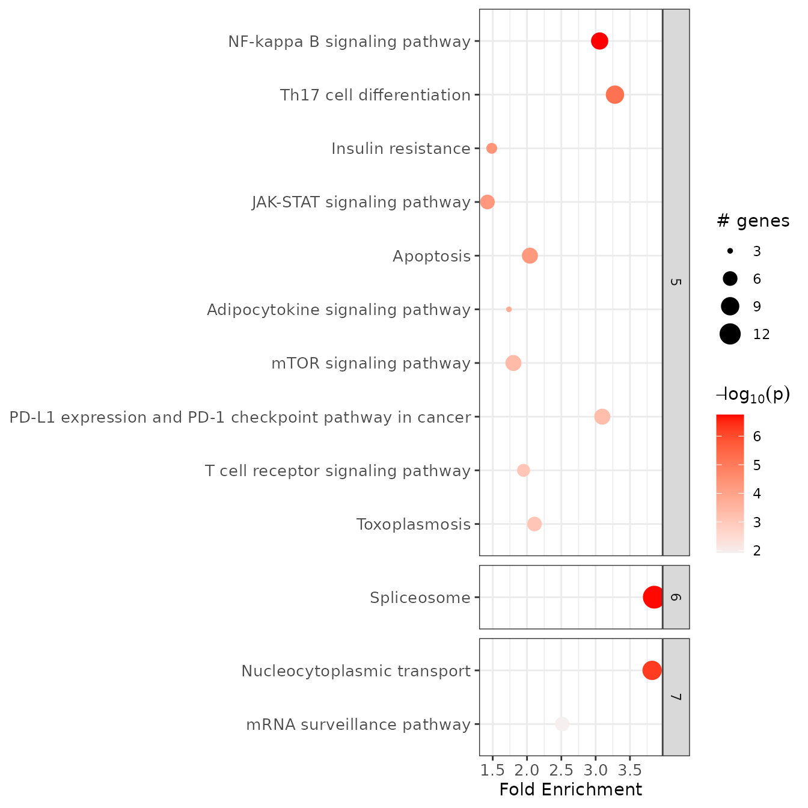
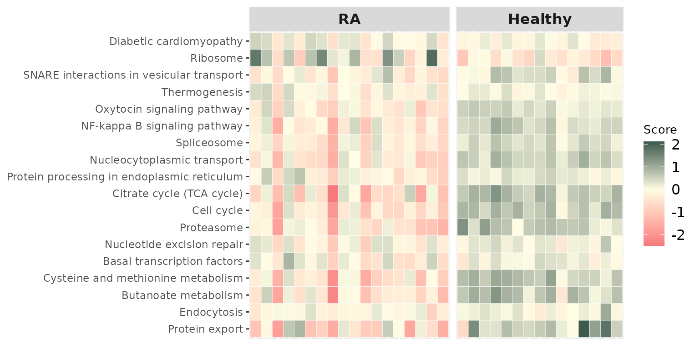

Introduction to pathfindR
Ege Ulgen
2020-10-03
Source:vignettes/intro_vignette.Rmd
intro_vignette.RmdpathfindR is a tool for enrichment analysis via active subnetworks. The package also offers functionalities to cluster the enriched terms and identify representative terms in each cluster, to score the enriched terms per sample and to visualize analysis results.
The functionalities of pathfindR is described in detail in Ulgen E, Ozisik O, Sezerman OU. 2019. pathfindR: An R Package for Comprehensive Identification of Enriched Pathways in Omics Data Through Active Subnetworks. Front. Genet. https://doi.org/10.3389/fgene.2019.00858
Overview
The observation that motivated us to develop pathfindR was that direct enrichment analysis of differential RNA/protein expression or DNA methylation results may not provide the researcher with the full picture. That is to say: enrichment analysis of only a list of significant genes alone may not be informative enough to explain the underlying disease mechanisms. Therefore, we considered leveraging interaction information from a protein-protein interaction network (PIN) to identify distinct active subnetworks and then perform enrichment analyses on these subnetworks.
An active subnetwork can be defined as a group of interconnected genes in a PIN that predominantly consists of significantly altered genes. In other words, active subnetworks define distinct disease-associated sets of interacting genes, whether discovered through the original analysis or discovered because of being in interaction with a significant gene.
The active-subnetwork-oriented enrichment analysis approach of pathfindR can be summarized as follows: Mapping the input genes with the associated p values onto the PIN (after processing the input), active subnetwork search is performed. The resulting active subnetworks are then filtered based on their scores and the number of significant genes they contain. This filtered list of active subnetworks are then used for enrichment analyses, i.e. using the genes in each of the active subnetworks, the significantly enriched terms (pathways/gene sets) are identified. Enriched terms with adjusted p values larger than the given threshold are discarded and the lowest adjusted p value (over all active subnetworks) for each term is kept. This process of active subnetwork search + enrichment analyses is repeated for a selected number of iterations, performed in parallel. Over all iterations, the lowest and the highest adjusted-p values, as well as number of occurrences over all iterations are reported for each significantly enriched term in the resulting data frame. An HTML report containing the results is also provided containing links to the visualizations of the enriched terms. This active-subnetwork-oriented enrichment approach is demonstrated in the section Active-subnetwork-oriented Enrichment Analysis of this vignette.
The enrichment analysis usually yields a great number of enriched terms whose biological functions are related. Therefore, we implemented two clustering approaches using a pairwise distance matrix based on the kappa statistics between the enriched terms (as proposed by Huang et al. 1). Based on this distance metric, the user can perform either hierarchical (default) or fuzzy clustering of the enriched terms. Details of clustering and partitioning of enriched terms are presented in the Clustering Enriched Terms section of this vignette.
Other functionalities of pathfindR including:
- agglomerated score calculation per each term (to investigate how a gene set is altered in a given sample)
- visualization of terms and term-related genes as a graph (to determine the degree of overlap between the enriched terms by identifying shared and/or distinct significant genes) and
- pathfindR analysis with custom gene sets are also briefly described.
Active-subnetwork-oriented Enrichment Analysis

For convenience, we provide the wrapper function run_pathfindR() to be used for the active-subnetwork-oriented enrichment analysis. The input for this function must be a data frame consisting of the columns containing: Gene Symbols, Change Values (optional) and p values. The example data frame used in this vignette (input_df) is the dataset containing the differentially-expressed genes for the GEO dataset GSE15573 comparing 18 rheumatoid arthritis (RA) patients versus 15 healthy subjects.
The first 6 rows of the example input data frame are displayed below:
| Gene.symbol | logFC | adj.P.Val |
|---|---|---|
| FAM110A | -0.6939359 | 0.0000034 |
| RNASE2 | 1.3535040 | 0.0000101 |
| S100A8 | 1.5448338 | 0.0000347 |
| S100A9 | 1.0280904 | 0.0002263 |
| TEX261 | -0.3235994 | 0.0002263 |
| ARHGAP17 | -0.6919330 | 0.0002708 |
For a detailed step-by-step explanation and an unwrapped demonstration of the active-subnetwork-oriented enrichment analysis, see the vignette Step-by-Step Execution of the pathfindR Enrichment Workflow
Executing the workflow is straightforward (but does typically take several minutes):
output_df <- run_pathfindR(input_df)
Useful arguments
This subsection demonstrates some (selected) useful arguments of run_pathfindR(). For a full list of arguments, see ?run_pathfindR or visit our GitHub wiki.
Filtering Input Genes
By default, run_pathfindR() uses the input genes with p-values < 0.05. To change this threshold, use p_val_threshold:
output_df <- run_pathfindR(input_df, p_val_threshold = 0.01)
Output Directory
By default, run_pathfindR() creates a directory named "pathfindR_Results" under the current working directory for writing the output files. To change the output directory, use output_dir:
output_df <- run_pathfindR(input_df, output_dir = "this_is_my_output_directory")
This creates "this_is_my_output_directory" under the current working directory.
In essence, this argument is treated as a path so it can be used to create the output directory anywhere. For example, to create the directory "my_dir" under "~/Desktop" and run the analysis there, you may run:
output_df <- run_pathfindR(input_df, output_dir = "~/Desktop/my_dir")
Note: If the output directory (e.g.
"my_dir") already exists,run_pathfindR()creates and works under"my_dir(1)". If that exists also exists, it creates"my_dir(2)"and so on. This was intentionally implemented so that any previous pathfindR results are not overwritten.
Gene Sets for Enrichment
The active-subnetwork-oriented enrichment analyses can be performed on any gene sets (biological pathways, gene ontology terms, transcription factor target genes, miRNA target genes etc.). The available gene sets in pathfindR are “KEGG”, “Reactome”, “BioCarta”, “GO-All”, “GO-BP”, “GO-CC” and “GO-MF” (all for Homo sapiens). For changing the default gene sets for enrichment analysis (hsa KEGG pathways), use the argument gene_sets
output_df <- run_pathfindR(input_df, gene_sets = "GO-MF")
By default, run_pathfindR() filters the gene sets by including only the terms containing at least 10 and at most 300 genes. To change the default behavior, you may change min_gset_size and max_gset_size:
## Including more terms for enrichment analysis output_df <- run_pathfindR(input_df, gene_sets = "GO-MF", min_gset_size = 5, max_gset_size = 500)
Note that increasing the number of terms for enrichment analysis may result in significantly longer run time.
If the user prefers to use another gene set source, the gene_sets argument should be set to "Custom" and the custom gene sets (list) and the custom gene set descriptions (named vector) should be supplied via the arguments custom_genes and custom_descriptions, respectively. See ?fetch_gene_set for more details and Analysis with Custom Gene Sets for a simple demonstration.
For details on obtaining organism-specific Gene Sets and PIN data, see the vignette Obtaining PIN and Gene Sets Data.
Filtering Enriched Terms by Adjusted-p Values
By default, run_pathfindR() adjusts the enrichment p values via the “bonferroni” method and filters the enriched terms by adjusted-p value < 0.05. To change this adjustment method and the threshold, set adj_method and enrichment_threshold, respectively:
output_df <- run_pathfindR(input_df, adj_method = "fdr", enrichment_threshold = 0.01)
Protein-protein Interaction Network
For the active subnetwork search process, a protein-protein interaction network (PIN) is used. run_pathfindR() maps the input genes onto this PIN and identifies active subnetworks which are then be used for enrichment analyses. To change the default PIN (“Biogrid”), use the pin_name_path argument:
output_df <- run_pathfindR(input_df, pin_name_path = "IntAct")
The pin_name_path argument can be one of “Biogrid”, “STRING”, “GeneMania”, “IntAct”, “KEGG”, “mmu_STRING” or it can be the path to a custom PIN file provided by the user.
# to use an external PIN of your choice output_df <- run_pathfindR(input_df, pin_name_path = "/path/to/myPIN.sif")
NOTE: the PIN is also used for generating the background genes (in this case, all unique genes in the PIN) during hypergeometric-distribution-based tests in enrichment analyses. Therefore, a large PIN will generally result in better results.
Active Subnetwork Search Method
Currently, there are three algorithms implemented in pathfindR for active subnetwork search: Greedy Algorithm (default, based on Ideker et al. 2), Simulated Annealing Algorithm (based on Ideker et al. 3) and Genetic Algorithm (based on Ozisik et al. 4). For a detailed discussion on which algorithm to use see this wiki entry
# for simulated annealing: output_df <- run_pathfindR(input_df, search_method = "SA") # for genetic algorithm: output_df <- run_pathfindR(input_df, search_method = "GA")
Other Arguments
Because the active subnetwork search algorithms are stochastic, run_pathfindR() may be set to iterate the active subnetwork identification and enrichment steps multiple times (by default 1 time). To change this number, set iterations:
output_df <- run_pathfindR(input_df, iterations = 25)
run_pathfindR() uses a parallel loop (using the package foreach) for performing these iterations in parallel. By default, the number of processes to be used is determined automatically. To override, change n_processes:
# if not set, n_processes defaults to (number of detected cores - 1) output_df <- run_pathfindR(input_df, iterations = 5, n_processes = 2)
Output
Enriched Terms Data Frame
run_pathfindR() returns a data frame of enriched terms. Columns are:
- ID: ID of the enriched term
- Term_Description: Description of the enriched term
- Fold_Enrichment: Fold enrichment value for the enriched term (Calculated using ONLY the input genes)
- occurrence: The number of iterations that the given term was found to enriched over all iterations
- lowest_p: the lowest adjusted-p value of the given term over all iterations
- highest_p: the highest adjusted-p value of the given term over all iterations
- non_Signif_Snw_Genes (OPTIONAL): the non-significant active subnetwork genes, comma-separated (controlled by
list_active_snw_genes, default isFALSE) - Up_regulated: the up-regulated genes (as determined by
change value> 0, if thechange columnwas provided) in the input involved in the given term’s gene set, comma-separated. If change column was not provided, all affected input genes are listed here. - Down_regulated: the down-regulated genes (as determined by
change value< 0, if thechange columnwas provided) in the input involved in the given term’s gene set, comma-separated
The first 2 rows of the output data frame of the example analysis on the rheumatoid arthritis gene-level differential expression input data (RA_input) is shown below:
| ID | Term_Description | Fold_Enrichment | occurrence | lowest_p | highest_p | Up_regulated | Down_regulated |
|---|---|---|---|---|---|---|---|
| hsa04714 | Thermogenesis | 2.503010 | 10 | 1e-07 | 1e-07 | NDUFA1, NDUFB3, UQCRQ, COX6A1, COX7A2, COX7C | ADCY7, CREB1, KDM1A, SMARCA4, ACTG1, ACTB, ARID1A, MTOR |
| hsa04130 | SNARE interactions in vesicular transport | 4.529257 | 10 | 1e-07 | 1e-07 | STX6 | STX2, BET1L, SNAP23 |
By default, run_pathfindR() also produces a graphical summary of enrichment results for top 10 enriched terms, which can also be later produced by enrichment_chart():

You may also disable plotting this chart by setting plot_enrichment_chart=FALSE and later produce this plot via the function enrichment_chart():
# change number of top terms plotted (default = 10) enrichment_chart(result_df = RA_output, top_terms = 15)
HTML Report
The function also creates an HTML report results.html that is saved in the output directory. This report contains links to two other HTML files:
1. enriched_terms.html
This document contains the table of the active subnetwork-oriented enrichment results (same as the returned data frame). By default, each enriched term description is linked to the visualization of the term, with the gene nodes colored according to their change values. If you choose not to create the visualization files, set visualize_enriched_terms = FALSE.
2. conversion_table.html
This document contains the table of converted gene symbols. Columns are:
- Old Symbol: the original gene symbol
- Converted Symbol: the alias symbol that was found in the PIN
- Change: the provided change value
- p-value: the provided adjusted p value
During input processing, gene symbols that are not in the PIN are identified and excluded. For human genes, if aliases of these missing gene symbols are found in the PIN, these symbols are converted to the corresponding aliases (controlled by the argument
convert2alias). This step is performed to best map the input data onto the PIN.
The document contains a second table of genes for which no interactions were identified after checking for alias symbols (so these could not be used during the analysis).
Clustering Enriched Terms

The wrapper function cluster_enriched_terms() can be used to perform clustering of enriched terms and partitioning the terms into biologically-relevant groups. Clustering can be performed either via hierarchical or fuzzy method using the pairwise kappa statistics (a chance-corrected measure of co-occurrence between two sets of categorized data) matrix between all enriched terms.
Hierarchical Clustering
By default, cluster_enriched_terms() performs hierarchical clustering of the terms (using \(1 - \kappa\) as the distance metric). Iterating over \(2,3,...n\) clusters (where \(n\) is the number of terms), cluster_enriched_terms() determines the optimal number of clusters by maximizing the average silhouette width, partitions the data into this optimal number of clusters and returns a data frame with cluster assignments.
RA_clustered <- cluster_enriched_terms(RA_output, plot_dend = FALSE, plot_clusters_graph = FALSE)
| ID | Term_Description | Fold_Enrichment | occurrence | lowest_p | highest_p | Up_regulated | Down_regulated | Cluster | Status |
|---|---|---|---|---|---|---|---|---|---|
| hsa04714 | Thermogenesis | 2.503010 | 10 | 1e-07 | 1e-07 | NDUFA1, NDUFB3, UQCRQ, COX6A1, COX7A2, COX7C | ADCY7, CREB1, KDM1A, SMARCA4, ACTG1, ACTB, ARID1A, MTOR | 1 | Representative |
| hsa04130 | SNARE interactions in vesicular transport | 4.529257 | 10 | 1e-07 | 1e-07 | STX6 | STX2, BET1L, SNAP23 | 2 | Representative |
## The representative terms knitr::kable(RA_clustered[RA_clustered$Status == "Representative", ])
| ID | Term_Description | Fold_Enrichment | occurrence | lowest_p | highest_p | Up_regulated | Down_regulated | Cluster | Status | |
|---|---|---|---|---|---|---|---|---|---|---|
| 1 | hsa04714 | Thermogenesis | 2.5030105 | 10 | 0.0000001 | 0.0000001 | NDUFA1, NDUFB3, UQCRQ, COX6A1, COX7A2, COX7C | ADCY7, CREB1, KDM1A, SMARCA4, ACTG1, ACTB, ARID1A, MTOR | 1 | Representative |
| 2 | hsa04130 | SNARE interactions in vesicular transport | 4.5292572 | 10 | 0.0000001 | 0.0000001 | STX6 | STX2, BET1L, SNAP23 | 2 | Representative |
| 3 | hsa00190 | Oxidative phosphorylation | 2.9760827 | 10 | 0.0000001 | 0.0000001 | NDUFA1, NDUFB3, UQCRQ, COX6A1, COX7A2, COX7C, ATP6V1D, ATP6V0E1 | ATP6V0E2 | 3 | Representative |
| 4 | hsa04064 | NF-kappa B signaling pathway | 2.9306958 | 10 | 0.0000001 | 0.0000001 | LY96 | PRKCQ, CARD11, TICAM1, IKBKB, PARP1, UBE2I, CSNK2A2 | 4 | Representative |
| 5 | hsa03410 | Base excision repair | 5.6615715 | 1 | 0.0000001 | 0.0000001 | POLE4 | MUTYH, APEX2, POLD2, PARP1 | 5 | Representative |
| 6 | hsa03040 | Spliceosome | 3.6077876 | 10 | 0.0000001 | 0.0000174 | SF3B6, LSM3, BUD31 | SNRPB, SF3B2, U2AF2, PUF60, SNU13, DDX23, EIF4A3, HNRNPA1, PCBP1, SRSF8, SRSF5 | 6 | Representative |
| 7 | hsa05012 | Parkinson disease | 2.4475789 | 10 | 0.0000001 | 0.0000001 | DDIT3, NDUFA1, NDUFB3, UQCRQ, COX6A1, COX7A2, COX7C, TXN | UBE2G1, PSMD7, CALM3, CALM1, VDAC1, SLC25A5, TUBB | 7 | Representative |
| 11 | hsa03013 | RNA transport | 2.5769912 | 10 | 0.0000021 | 0.0000708 | NUP214 | NUP62, NUP93, RANGAP1, UBE2I, SUMO3, GEMIN4, EIF2S3, EIF2B1, EIF4A3, RNPS1, SRRM1 | 8 | Representative |
| 12 | hsa04659 | Th17 cell differentiation | 3.1726165 | 10 | 0.0000026 | 0.0000026 | MTOR, JAK1, HLA-DPA1, NFATC3, PRKCQ, IKBKB, GATA3, IL27RA, IL2RB | 9 | Representative | |
| 13 | hsa04722 | Neurotrophin signaling pathway | 2.8499775 | 10 | 0.0000044 | 0.0000066 | SH2B3, CRKL, FASLG, CALM3, CALM1, ABL1, MAGED1, IRAK2, IKBKB | 10 | Representative | |
| 14 | hsa03430 | Mismatch repair | 4.8738746 | 10 | 0.0000048 | 0.0361642 | MLH1, RPA1, POLD2 | 11 | Representative | |
| 15 | hsa05167 | Kaposi sarcoma-associated herpesvirus infection | 1.9666511 | 10 | 0.0000099 | 0.0000099 | TICAM1, JAK1, ZFP36, IKBKB, GNB1, MTOR, CALM3, CALM1, NFATC3, CREB1 | 12 | Representative | |
| 16 | hsa04630 | JAK-STAT signaling pathway | 1.4280142 | 10 | 0.0000185 | 0.0000185 | IL2RB, IL10RA, IL27RA, JAK1, PIAS3, MTOR | 13 | Representative | |
| 17 | hsa04931 | Insulin resistance | 1.3968737 | 10 | 0.0000229 | 0.0000229 | MTOR, IKBKB, PRKCQ, CREB1 | 14 | Representative | |
| 19 | hsa05230 | Central carbon metabolism in cancer | 2.1661665 | 10 | 0.0000312 | 0.0150590 | HK3 | PDHA1, PDHB, MTOR | 15 | Representative |
| 20 | hsa04210 | Apoptosis | 1.9375156 | 10 | 0.0000436 | 0.0000436 | DDIT3 | FASLG, ACTG1, ACTB, PARP1, DFFB, IKBKB | 16 | Representative |
| 21 | hsa05203 | Viral carcinogenesis | 1.8227498 | 10 | 0.0000467 | 0.0000467 | GTF2B | CREB1, JAK1, SCRIB, RBL2, HDAC1, DNAJA3, SRF | 17 | Representative |
| 22 | hsa05130 | Pathogenic Escherichia coli infection | 2.3724680 | 10 | 0.0000722 | 0.0001086 | TLR5, GAPDH, CLDN9 | ARF1, ACTG1, ACTB, SLC9A3R1, TUBB, ABL1, ITGB1, IKBKB, FASLG | 18 | Representative |
| 23 | hsa03010 | Ribosome | 1.7208197 | 10 | 0.0000787 | 0.0007479 | MRPS18C, RPS24, MRPL33, RPL26, RPL31, RPL39 | RPLP2 | 19 | Representative |
| 24 | hsa05131 | Shigellosis | 2.8334689 | 10 | 0.0001162 | 0.0003993 | HK3, TLR5, CBX3, RRAGD | ITGB1, CRKL, ACTG1, ACTB, PFN1, ARF1, VDAC1, IKBKB, PRKCQ, PIK3R4, MTOR, FNBP1 | 20 | Representative |
| 28 | hsa05132 | Salmonella infection | 2.4792853 | 10 | 0.0002072 | 0.0008457 | DYNLT1, STX10, TLR6, LY96, TLR5, GAPDH, TXN | DYNC1H1, RAB9A, PFN1, ACTG1, ACTB, ARF1, IKBKB | 21 | Representative |
| 29 | hsa04110 | Cell cycle | 1.5067085 | 10 | 0.0002381 | 0.0003318 | RBL2, ABL1, HDAC1, CDKN1C, ANAPC1 | 22 | Representative | |
| 30 | hsa05166 | Human T-cell leukemia virus 1 infection | 2.3887178 | 10 | 0.0002695 | 0.0094105 | TRRAP, NFATC3, IL2RB, JAK1, VDAC1, SLC25A5, ANAPC1, IKBKB, ZFP36, ADCY7, HLA-DPA1, SRF, ETS1, CREB1 | 23 | Representative | |
| 31 | hsa04140 | Autophagy | 1.6607276 | 1 | 0.0004660 | 0.0004660 | IGBP1, RRAGD | MTOR, PIK3R4, UVRAG, PRKCQ | 24 | Representative |
| 32 | hsa04150 | mTOR signaling pathway | 1.7322159 | 10 | 0.0005233 | 0.0007285 | ATP6V1D, RRAGD | WDR59, MTOR, TELO2, LPIN1, IKBKB | 25 | Representative |
| 34 | hsa04530 | Tight junction | 2.4107337 | 10 | 0.0005808 | 0.0095933 | CLDN9, MYL6B, MYL6 | ARHGAP17, SCRIB, TJAP1, SLC9A3R1, ACTG1, ACTB, ITGB1 | 26 | Representative |
| 35 | hsa04660 | T cell receptor signaling pathway | 1.8498204 | 10 | 0.0006897 | 0.0006897 | LCP2, NFATC3, PRKCQ, CARD11, IKBKB | 27 | Representative | |
| 36 | hsa00020 | Citrate cycle (TCA cycle) | 3.7366372 | 10 | 0.0007560 | 0.0011981 | MDH2, PDHA1, PDHB | 28 | Representative | |
| 37 | hsa03050 | Proteasome | 1.6607276 | 10 | 0.0007802 | 0.0015209 | PSMD7, PSMB10 | 29 | Representative | |
| 38 | hsa05215 | Prostate cancer | 1.5408813 | 10 | 0.0008795 | 0.0008795 | MMP9 | CREB1, IKBKB, MTOR | 30 | Representative |
| 39 | hsa05135 | Yersinia infection | 2.3353982 | 10 | 0.0008831 | 0.0031944 | ITGB1, CRKL, ACTG1, ACTB, IKBKB, TICAM1, LCP2, NFATC3 | 31 | Representative | |
| 40 | hsa04922 | Glucagon signaling pathway | 1.8316849 | 10 | 0.0010751 | 0.0010751 | CREB1, CALM3, CALM1, PDHA1, PDHB | 32 | Representative | |
| 41 | hsa05164 | Influenza A | 1.9899251 | 10 | 0.0011487 | 0.0016024 | IKBKB, TICAM1, JAK1, HLA-DPA1, FASLG, VDAC1, SLC25A5, ACTG1, ACTB | 33 | Representative | |
| 43 | hsa03420 | Nucleotide excision repair | 4.0615621 | 10 | 0.0013233 | 0.0013233 | GTF2H5, POLE4 | XPC, RPA1, POLD2 | 34 | Representative |
| 44 | hsa05418 | Fluid shear stress and atherosclerosis | 2.7077081 | 10 | 0.0015240 | 0.0015240 | GSTO1, TXN, MMP9 | CALM3, CALM1, KLF2, ACTG1, ACTB, IKBKB, SUMO3 | 35 | Representative |
| 46 | hsa05416 | Viral myocarditis | 2.4910914 | 10 | 0.0018715 | 0.0312328 | ABL1, ACTG1, ACTB, HLA-DPA1 | 36 | Representative | |
| 47 | hsa04921 | Oxytocin signaling pathway | 2.5419300 | 10 | 0.0019582 | 0.0019582 | MYL6B, MYL6 | EEF2K, EEF2, CALM3, CALM1, NFATC3, ACTG1, ACTB, ADCY7 | 37 | Representative |
| 48 | hsa04621 | NOD-like receptor signaling pathway | 1.3188131 | 10 | 0.0020956 | 0.0097568 | CAMP, TXN | IKBKB, VDAC1, JAK1, TICAM1 | 38 | Representative |
| 49 | hsa04145 | Phagosome | 2.7220536 | 10 | 0.0021779 | 0.0182450 | ATP6V1D, ATP6V0E1, TLR6, NCF4 | ACTG1, ACTB, HLA-DPA1, ATP6V0E2, DYNC1H1, TUBB, ITGB1 | 39 | Representative |
| 51 | hsa04919 | Thyroid hormone signaling pathway | 2.1980219 | 10 | 0.0028594 | 0.0028594 | SIN3A, HDAC1, MED24, ATP2A2, MTOR, ACTG1, ACTB | 40 | Representative | |
| 55 | hsa04371 | Apelin signaling pathway | 1.9519746 | 10 | 0.0031782 | 0.0031782 | ADCY7, GNB1, CALM3, CALM1, MTOR, PIK3R4, KLF2 | 41 | Representative | |
| 58 | hsa05202 | Transcriptional misregulation in cancer | 2.1851679 | 10 | 0.0035608 | 0.0433105 | MMP9, DDIT3 | HDAC1, SIN3A, BCL11B, SLC45A3, EWSR1, IL2RB, TAF15, ASPSCR1 | 42 | Representative |
| 60 | hsa05225 | Hepatocellular carcinoma | 1.5662551 | 10 | 0.0040828 | 0.0040828 | GSTO1 | MTOR, ACTG1, ACTB, ARID1A, SMARCA4, BRD7 | 43 | Representative |
| 61 | hsa03022 | Basal transcription factors | 4.1518191 | 1 | 0.0041451 | 0.0041451 | GTF2B, GTF2H5 | TAF1L, TAF4, TAF15 | 44 | Representative |
| 63 | hsa05017 | Spinocerebellar ataxia | 1.8817597 | 7 | 0.0050547 | 0.0496908 | GTF2B | VDAC1, SLC25A5, PSMD7, ATP2A2, MTOR, PIK3R4 | 45 | Representative |
| 66 | hsa05169 | Epstein-Barr virus infection | 1.3013164 | 10 | 0.0067253 | 0.0067253 | HLA-DPA1, IKBKB, JAK1, PSMD7, SIN3A, HDAC1, RUNX3 | 46 | Representative | |
| 68 | hsa03015 | mRNA surveillance pathway | 2.4369373 | 10 | 0.0067903 | 0.0086149 | PPP2R3C | EIF4A3, RNPS1, SRRM1, WDR33, DAZAP1 | 47 | Representative |
| 71 | hsa05133 | Pertussis | 3.4416395 | 10 | 0.0074274 | 0.0107669 | LY96 | ITGB1, CALM3, CALM1, CFL1, TICAM1, IRF1 | 48 | Representative |
| 75 | hsa05220 | Chronic myeloid leukemia | 1.9666511 | 10 | 0.0089957 | 0.0089957 | ABL1, CRKL, IKBKB, HDAC1 | 49 | Representative | |
| 76 | hsa04120 | Ubiquitin mediated proteolysis | 1.6364834 | 10 | 0.0095822 | 0.0223077 | TRIP12 | UBE2G1, UBE2I, HERC1, PIAS3, ANAPC1 | 50 | Representative |
| 81 | hsa04657 | IL-17 signaling pathway | 1.6607276 | 10 | 0.0149285 | 0.0178590 | S100A8, S100A9, MMP9 | IKBKB | 51 | Representative |
| 83 | hsa05142 | Chagas disease | 1.4653479 | 1 | 0.0179240 | 0.0179240 | TLR6 | TICAM1, IKBKB, FASLG | 52 | Representative |
| 85 | hsa04068 | FoxO signaling pathway | 1.4483090 | 10 | 0.0186510 | 0.0435586 | IKBKB, RBL2, FASLG, KLF2, S1PR1 | 53 | Representative | |
| 87 | hsa05160 | Hepatitis C | 1.4558327 | 10 | 0.0196959 | 0.0255529 | CLDN9 | CD81, TICAM1, IKBKB, JAK1, FASLG | 54 | Representative |
| 88 | hsa04625 | C-type lectin receptor signaling pathway | 2.2197845 | 10 | 0.0210611 | 0.0251855 | CLEC4D | CALM3, CALM1, NFATC3, IKBKB, IRF1 | 55 | Representative |
| 90 | hsa04211 | Longevity regulating pathway | 1.2595406 | 10 | 0.0322028 | 0.0322028 | ADCY7, CREB1, MTOR | 56 | Representative | |
| 92 | hsa04390 | Hippo signaling pathway | 0.9898377 | 5 | 0.0339038 | 0.0339038 | SCRIB, SMAD7, ACTG1, ACTB | 57 | Representative | |
| 93 | hsa05162 | Measles | 1.6246249 | 10 | 0.0359192 | 0.0359192 | IKBKB, CSNK2A2, JAK1, RAB9A, FASLG, IL2RB | 58 | Representative | |
| 94 | hsa04141 | Protein processing in endoplasmic reticulum | 1.3925356 | 10 | 0.0360158 | 0.0485527 | CKAP4, DDIT3 | DDOST, EDEM1, PDIA4, UBE2G1 | 59 | Representative |
| 96 | hsa04380 | Osteoclast differentiation | 1.5189582 | 10 | 0.0378284 | 0.0452012 | NCF4 | IKBKB, LCP2, CREB1, JAK1 | 60 | Representative |
| 99 | hsa04650 | Natural killer cell mediated cytotoxicity | 0.5931170 | 9 | 0.0406276 | 0.0406276 | LCP2, FASLG | 61 | Representative | |
| 100 | hsa04218 | Cellular senescence | 1.9285869 | 6 | 0.0407392 | 0.0472612 | RBL2, MTOR, ETS1, CALM3, CALM1, NFATC3, SLC25A5, VDAC1 | 62 | Representative | |
| 101 | hsa04350 | TGF-beta signaling pathway | 0.8396937 | 10 | 0.0420663 | 0.0420663 | SMAD7, TGIF2 | 63 | Representative | |
| 102 | hsa05210 | Colorectal cancer | 1.3034781 | 3 | 0.0430477 | 0.0430477 | RALGDS, MLH1, MTOR | 64 | Representative | |
| 104 | hsa00670 | One carbon pool by folate | 4.1518191 | 1 | 0.0480427 | 0.0480427 | SHMT1, ATIC | 65 | Representative |
After clustering, you may again plot the summary enrichment chart and display the enriched terms by clusters:
# plotting only selected clusters for better visualization RA_selected <- subset(RA_clustered, Cluster %in% 5:7) enrichment_chart(RA_selected, plot_by_cluster = TRUE)

For details, see ?hierarchical_term_clustering
Heuristic Fuzzy Multiple-linkage Partitioning
Alternatively, the fuzzy clustering method (as described by Huang et al.5) can be used:
RA_clustered_fuzzy <- cluster_enriched_terms(RA_output, method = "fuzzy")
For details, see ?fuzzy_term_clustering
Term-Gene Heatmap
The function term_gene_heatmap() can be used to visualize the heatmap of genes that are involved in the enriched terms. This heatmap allows visual identification of the input genes involved in the enriched terms, as well as the common or distinct genes between different terms. If the input data frame (same as in run_pathfindR()) is supplied, the tile colors indicate the change values.
term_gene_heatmap(result_df = RA_output, genes_df = RA_input)

See the vignette Visualization of pathfindR Enrichment Results for more details.
Term-Gene Graph
The visualization function term_gene_graph() (adapted from the “Gene-Concept network visualization” by the R package enrichplot) can be utilized to visualize which genes are involved in the enriched terms. The function creates a term-gene graph which shows the connections between genes and biological terms (enriched pathways or gene sets). This allows for the investigation of multiple terms to which significant genes are related. This graph also enables visual determination of the degree of overlap between the enriched terms by identifying shared and/or distinct significant genes.
term_gene_graph(result_df = RA_output, use_description = TRUE)

See the vignette Visualization of pathfindR Enrichment Results for more details.
UpSet Plot
UpSet plots are plots of the intersections of sets as a matrix. This function creates a ggplot object of an UpSet plot where the x-axis is the UpSet plot of intersections of enriched terms. By default (i.e., method = "heatmap"), the main plot is a heatmap of genes at the corresponding intersections, colored by up/down regulation (if genes_df is provided, colored by change values). If method = "barplot", the main plot is bar plots of the number of genes at the corresponding intersections. Finally, if method = "boxplot" and genes_df is provided, then the main plot displays the boxplots of change values of the genes at the corresponding intersections.
UpSet_plot(result_df = RA_output, genes_df = RA_input)

See the vignette Visualization of pathfindR Enrichment Results for more details.
Aggregated Term Scores per Sample
The function score_terms() can be used to calculate the agglomerated z score of each enriched term per sample. This allows the user to individually examine the scores and infer how a term is overall altered (activated or repressed) in a given sample or a group of samples.
## Vector of "Case" IDs cases <- c("GSM389703", "GSM389704", "GSM389706", "GSM389708", "GSM389711", "GSM389714", "GSM389716", "GSM389717", "GSM389719", "GSM389721", "GSM389722", "GSM389724", "GSM389726", "GSM389727", "GSM389730", "GSM389731", "GSM389733", "GSM389735") ## Calculate scores for representative terms ## and plot heat map using term descriptions score_matrix <- score_terms(enrichment_table = RA_clustered[RA_clustered$Status == "Representative", ], exp_mat = RA_exp_mat, cases = cases, use_description = TRUE, # default FALSE label_samples = FALSE, # default = TRUE case_title = "RA", # default = "Case" control_title = "Healthy", # default = "Control" low = "#f7797d", # default = "green" mid = "#fffde4", # default = "black" high = "#1f4037") # default = "red"

Comparison of 2 pathfindR Results
The function combine_pathfindR_results() allows combination of two pathfindR active-subnetwork-oriented enrichment analysis results for investigating common and distinct terms between the groups. Below is an example for comparing results using two different rheumatoid arthritis-related data sets(RA_output and RA_comparison_output).
combined_df <- combine_pathfindR_results(result_A = RA_output, result_B = RA_comparison_output, plot_common = FALSE) #> You may run `combined_results_graph()` to create visualizations of combined term-gene graphs of selected terms
For more details, see the vignette Comparing Two pathfindR Results
Analysis with Custom Gene Sets
As of v1.5, pathfindR offers utility functions for obtaining organism-specific PIN data and organism-specific gene sets data via
get_pin_file()andget_gene_sets_list(), respectively. See the vignette Obtaining PIN and Gene Sets Data for detailed information on how to gather PIN and gene sets data (for any organism of your choice) for use with pathfindR.
It is possible to use run_pathfindR() with custom gene sets (including gene sets for non-Homo-sapiens species). Here, we provide an example application of active-subnetwork-oriented enrichment analysis of the target genes of two transcription factors.
We first load and prepare the gene sets:
## CREB target genes CREB_target_genes <- normalizePath(system.file("extdata/CREB.txt", package = "pathfindR")) CREB_target_genes <- readLines(CREB_target_genes)[-c(1, 2)] # skip the first two lines ## MYC target genes MYC_target_genes <- normalizePath(system.file("extdata/MYC.txt", package = "pathfindR")) MYC_target_genes <- readLines(MYC_target_genes)[-c(1, 2)] # skip the first two lines ## Prep for use custom_genes <- list(TF1 = CREB_target_genes, TF2 = MYC_target_genes) custom_descriptions <- c(TF1 = "CREB target genes", TF2 = "MYC target genes")
We next prepare the example input data frame. Because of the way we choose genes, we expect significant enrichment for MYC targets (40 MYC target genes + 10 CREB target genes). Because this is only an example, we also assign each genes random p-values between 0.001 and 0.05.
set.seed(123) ## Select 40 random genes from MYC gene sets and 10 from CREB gene sets selected_genes <- sample(MYC_target_genes, 40) selected_genes <- c(selected_genes, sample(CREB_target_genes, 10)) ## Assign random p value between 0.001 and 0.05 for each selected gene rand_p_vals <- sample(seq(0.001, 0.05, length.out = 5), size = length(selected_genes), replace = TRUE) input_df <- data.frame(Gene_symbol = selected_genes, p_val = rand_p_vals) knitr::kable(head(input_df))
| Gene_symbol | p_val |
|---|---|
| HNRNPD | 0.01325 |
| IL1RAPL1 | 0.00100 |
| CD3EAP | 0.00100 |
| LTBR | 0.02550 |
| CGREF1 | 0.00100 |
| TPM2 | 0.05000 |
Finally, we perform active-subnetwork-oriented enrichment analysis via run_pathfindR() using the custom genes as the gene sets:
custom_result <- run_pathfindR(input_df, gene_sets = "Custom", custom_genes = custom_genes, custom_descriptions = custom_descriptions, max_gset_size = Inf, # DO NOT LIMIT GENE SET SIZE output_dir = "misc/v1.4/CREB_MYC") knitr::kable(custom_result)
| ID | Term_Description | Fold_Enrichment | occurrence | lowest_p | highest_p | Up_regulated | Down_regulated |
|---|---|---|---|---|---|---|---|
| TF2 | MYC target genes | 17.82888 | 1 | 0.0000000 | 0.0000000 | AGRP, ATP6V1C1, C19orf54, CD3EAP, CGREF1, CNPY3, EPB41, FOXD3, FXR1, GLA, HNRNPD, HOXA7, IL1RAPL1, KDM6A, LONP1, LTBR, MDN1, MICU1, NET1, NEUROD6, NMNAT2, NOL6, NUDC, PEPD, PKN1, PSMB3, RPS19, RPS28, RRS1, SLC9A5, SMC3, STC2, TESK2, TNPO2, TOPORS, TPM2, TSSK3, WBP2, ZBTB8OS, ZFYVE26, ZHX2 | |
| TF1 | CREB target genes | 19.94835 | 1 | 0.0008582 | 0.0008582 | BRAF, DIO2, ELAVL1, EPB41, FAM65A, FOXD3, NEUROD6, NOC4L, NUPL2, PPP1R15A, SYNGR3, TIPRL |
It is also possible to run pathfindR using non-human organism annotation. See the vignette pathfindR Analysis for non-Homo-sapiens organisms
Huang DW, Sherman BT, Tan Q, et al. The DAVID Gene Functional Classification Tool: a novel biological module-centric algorithm to functionally analyze large gene lists. Genome Biol. 2007;8(9):R183.↩︎
Ideker T, Ozier O, Schwikowski B, Siegel AF. Discovering regulatory and signalling circuits in molecular interaction networks. Bioinformatics. 2002;18 Suppl 1:S233-40.↩︎
Ideker T, Ozier O, Schwikowski B, Siegel AF. Discovering regulatory and signalling circuits in molecular interaction networks. Bioinformatics. 2002;18 Suppl 1:S233-40.↩︎
Ozisik O, Bakir-Gungor B, Diri B, Sezerman OU. Active Subnetwork GA: A Two Stage Genetic Algorithm Approach to Active Subnetwork Search. Current Bioinformatics. 2017; 12(4):320-8. 10.2174/1574893611666160527100444↩︎
Huang DW, Sherman BT, Tan Q, et al. The DAVID Gene Functional Classification Tool: a novel biological module-centric algorithm to functionally analyze large gene lists. Genome Biol. 2007;8(9):R183.↩︎